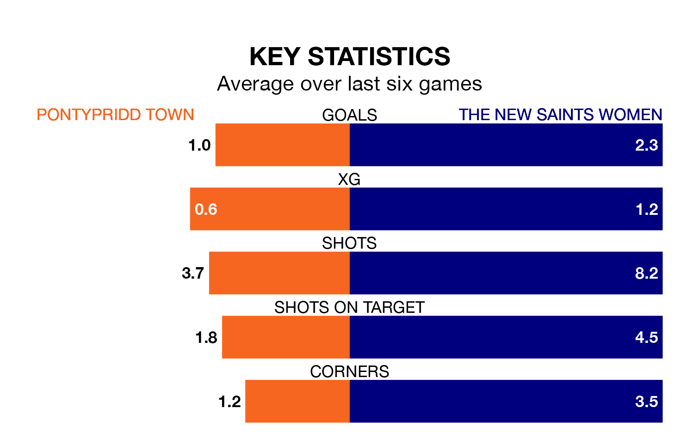

Relegation candidates Pontypridd Town face a challenge against high-flying The New Saints Women on Sunday.
Pontypridd Town are rooted to the bottom of the Welsh Premier Women's League table, and have picked up three wins and three draws in their 19 games to date.
The New Saints, meanwhile, are fourth in the standings with 26 points, having won eight and drawn two, and are 20 points behind table-toppers Cardiff City.
With 15 goals in 19 games so far this season, Pontypridd are the league's lowest scorers with 0.8 goals per game. And they are conceding more than average, letting in 40 goals at a rate of 2.1 per game.
The New Saints, meanwhile, are above average scorers, with 2.3 goals per game, compared to a league average of 1.8. They have conceded 2.5 goals per game.
In the last 10 years, Pontypridd and The New Saints have played each other on nine occasions. Pontypridd won two of them, The New Saints five, and they drew twice.
On average, Pontypridd scored 1.3 goals and the New Saints 2.4 in those matches.
Their last meeting was on March 27, when The New Saints won 4-0 at home.
Town are in mixed form in the Welsh Premier Women's League, with two wins and two draws from their last six games.
With three wins and a draw over that period, the New Saints' form is slightly better – they have taken 10 points from 18, compared to the home team's eight.
Pontypridd's last match was on March 31, a 1-1 draw against Cardiff Metropolitan.
The New Saints beat Barry Town United Women 3-0 last time out, also on March 31.
Updated: 16:41 (UTC), 04/04/24